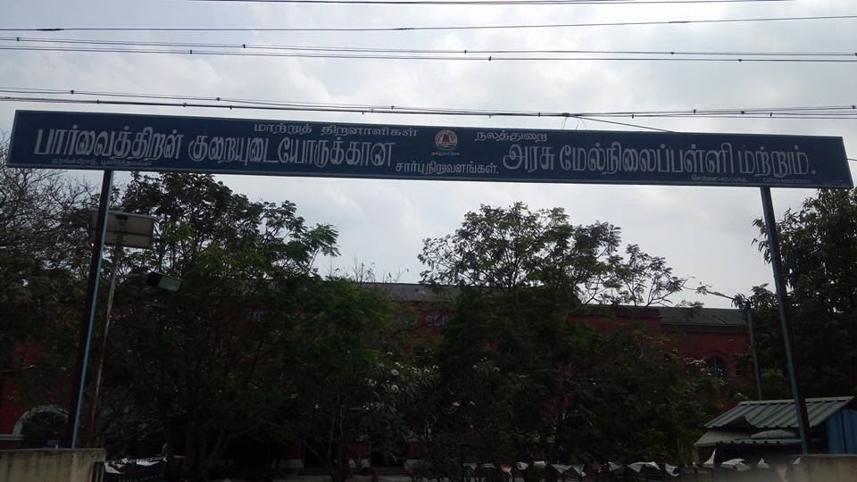
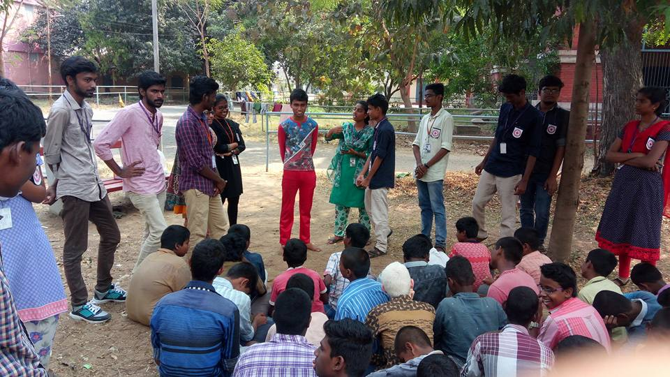
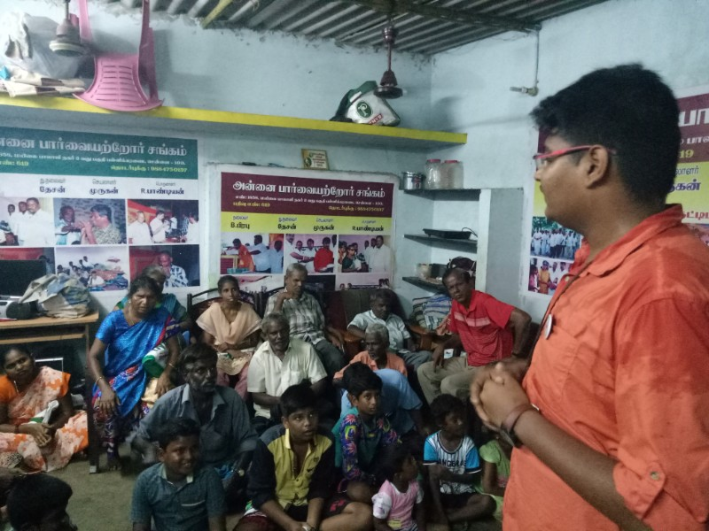
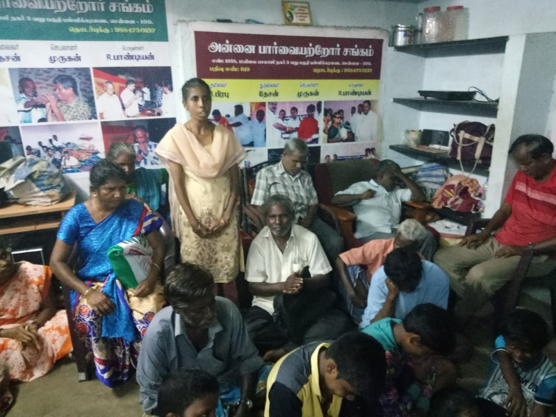
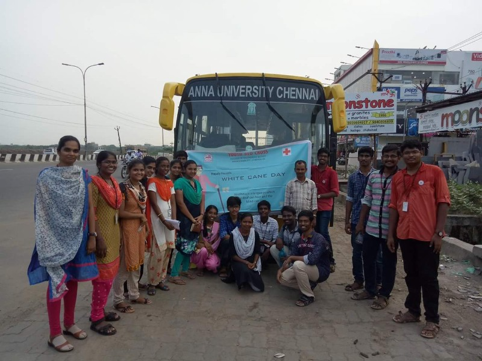
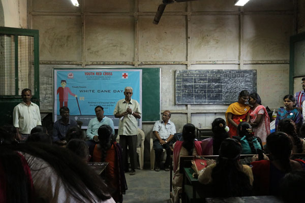
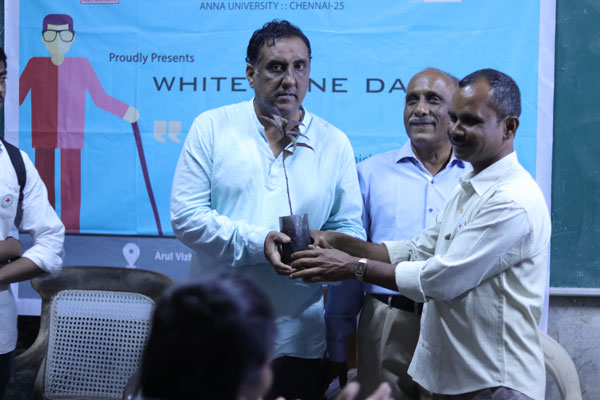
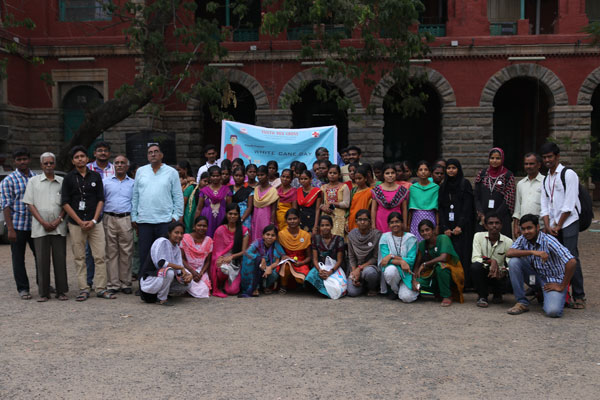

YOUTH RED CROSS
Anna university, Chennai-600025


White Cane Day'18
(For more details view the site in Desktop)
White Cane Day is celebrated on October 15 of each year since 1964. This day symbolises the invention of the important symbol of blindness and tool of independence, the white cane. The date is set aside to celebrate the achievements of people who are visually challenged.
The Youth Red Cross volunteers observed the white cane day on 03/03/2019 (Sunday) at the government school for visually challenged, Poonamallee where a Carrier Guidance programme for visually impaired students was conducted by Poo.Ko Saravanan, IRS Chennai. More than 50 students got benefitted by the programme, and also various events focussed on developing confidence among students were conducted.
 
White Cane Day'17
(For more details view the site in Desktop)
White Cane Day is celebrated on October 15 of each year since 1964. This day symbolises the invention of the important symbol of blindness and tool of independence, the white cane.The date is set aside to celebrate the achievements of people who are visually challenged.
This year we went to Annai home for visually challenged. There were about 30 people in the home. We explained them about White Cane Day. We entertained them by asking riddles, singing songs and they also voluntarily sung many songs. Then they said stories and we tried to make them dance. We gifted bedsheets to each of them.
  
White Cane Day'16
White Cane Day is one of the greatest event which is conducted by Youth Red Cross of CEG Campus. The aim of the event is to help the visually challenged by providing basic requirements to them. On Sunday 19th February 2017 fifteen YRC volunteers, 30 blinds students with their coordinator Mr.Padhmanadan founder of ARUL VIZHIGAL assembled in Presidency college, Chennai to conduct the event. The event was started at 3.00 pm. Our volunteers gave the welcome address for the Chief Guest Dr.P.Balakrishnan, Retd. RMO, Govt. Eye Hospital, Egmore. He gave an inspirational talk. After that there was an interactive section in which students asked their doubts and he clarified it. Then YRC volunteers conducted a general quiz for the students and made them to explore their talents like singing and acting. The winners were awarded with prizes. After that our YRC Programme Officer Dr.D.Narashiman and Mr.P.Gopalan, Clerical Assistant, YRC Cell offered gifts to the winners.


